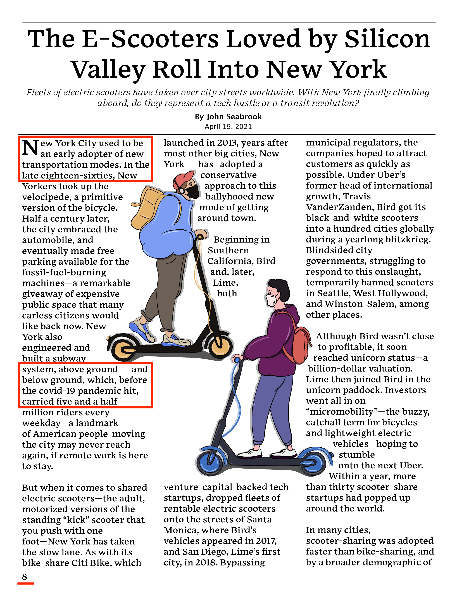
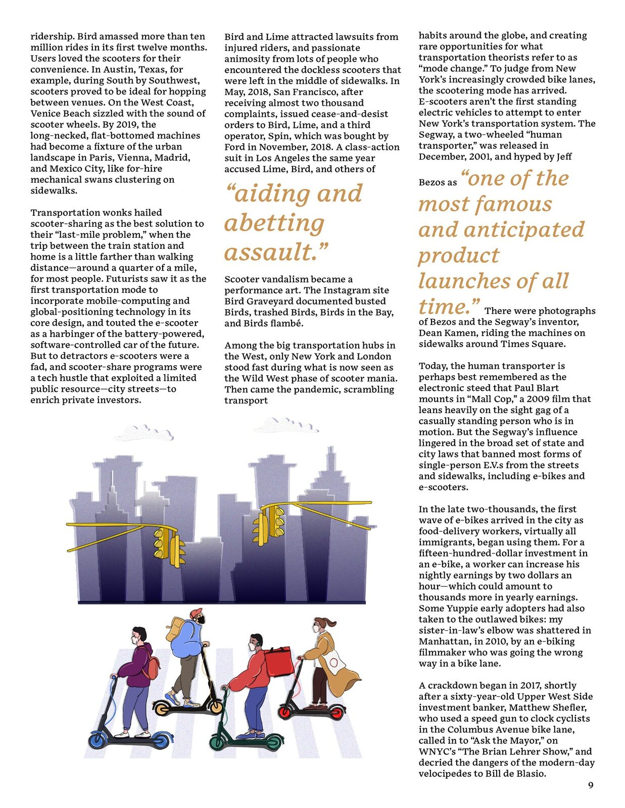
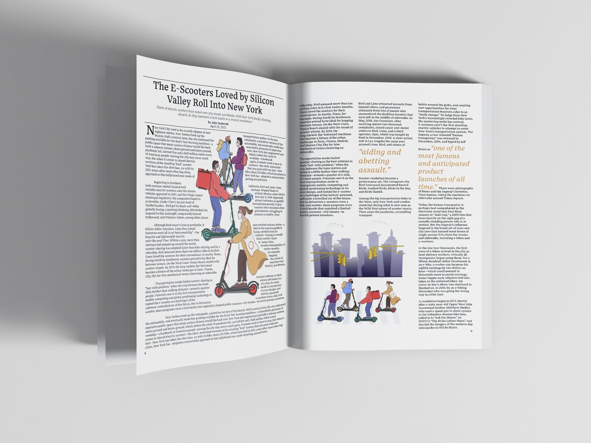

Final Look for the Editorial illustration "The E-Scooters Revolution"
"Fleets of electric scooters have taken over city streets worldwide. With New York finally climbing aboard, do they represent a tech hustle or a transit revolution?"
This project was inspired by street scenes. In 2020, COVID-19 spread all over the world. Everyone had to stay home, working remotely and taking classes online. This pandemic changed many people’s lifestyles. One day, I was walking on my way to work. I suddenly realized there were many people riding electric scooters on the street. When did this become so popular? I stopped and watched the street: delivery workers, teenagers, and couples. It was such an interesting scene that I decided to draw it. I found an article online from The New Yorker. I combined the text and my illustration to make an interesting project.
First version


What needed to be fixed:
Text size too big,
Text wrap
Quotes add color,
Page number too big.

Final version




Software
Adobe Illustrator, Photoshop.
3+ weeks